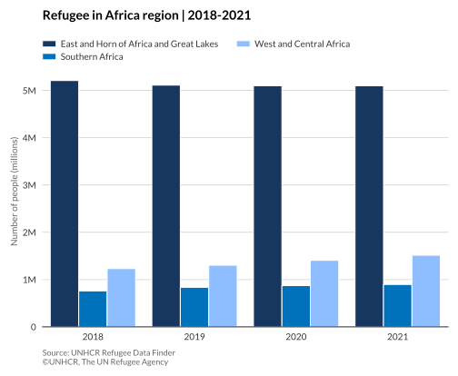
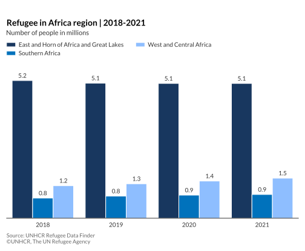

Grouped column chart with python
In a column chart, each category is represented by a vertical rectangle, with the height of the rectangle being proportional to the values being plotted.
More about: Grouped column chart
Basic grouped column chart
# import libraries
import numpy as np
import matplotlib.pyplot as plt
import pandas as pd
#load custom font
from matplotlib import rcParams
rcParams['font.family'] = 'lato'
# show static image in the notebook if needed
%matplotlib inline
#load data set
df = pd.read_csv('https://raw.githubusercontent.com/GDS-ODSSS/unhcr-dataviz-platform/master/data/comparison/column_grouped.csv')
#reshape df from long to wide
df = df.pivot(index='year', columns='main_office', values='refugee_number')
df = df.reset_index()
#compute data array for plotting
labels = df['year']
category1 = df['East and Horn of Africa and Great Lakes']
category2 = df['Southern Africa']
category3 = df['West and Central Africa']
#set x-axis ticks label location
x = np.arange(len(labels))
#set bar width
width = 0.28
#plot the chart
fig, ax = plt.subplots()
rects1 = ax.bar(x - width, category1, width, color='#18375F', label='East and Horn of Africa and Great Lakes')
rects2 = ax.bar(x, category2, width, color='#0072BC', label='Southern Africa')
rects2 = ax.bar(x + width, category3, width, color='#8EBEFF', label='West and Central Africa')
#set chart title
ax.set_title('Title here', loc='left', fontweight='bold', pad=35, fontsize=14)
#set y-axis label
ax.set_ylabel('Number of people (millions)', color = '#666666', fontsize=10)
#set tick parameters
ax.tick_params(axis='both', which='both',
labelsize=10, bottom=False, top=False, labelbottom=True,
left=False, right=False, labelleft=True, labelcolor = '#333333')
#set x-axis tick and label
ax.set_xticks(x, labels)
#set chart legend
ax.legend(loc=(0,0.95), ncol=2, frameon=False, fontsize=10, labelcolor='#333333')
#remove unnecessary spines
ax.spines['top'].set_visible(False)
ax.spines['right'].set_visible(False)
ax.spines['left'].set_visible(False)
#show grid below the bars
ax.grid(axis='y', lw=.5, c='k', alpha=.3)
ax.set_axisbelow(True)
#format y-axis tick labels
def millions(x, pos):
return '{:1.0f}M'.format(x*1e-6)
ax.yaxis.set_major_formatter(millions)
#set chart source and copyright
plt.annotate('Source: UNHCR Refugee Data Finder', (0,0), (0, -25), xycoords='axes fraction', textcoords='offset points', va='top', color = '#666666', fontsize=9)
plt.annotate('©UNHCR, The UN Refugee Agency', (0,0), (0, -35), xycoords='axes fraction', textcoords='offset points', va='top', color = '#666666', fontsize=9)
#adjust chart margin and layout
fig.tight_layout()
plt.margins(x=0.02, y=0.1)
#show chart
plt.show()
Grouped column chart with data label
# import libraries
import numpy as np
import matplotlib.pyplot as plt
import pandas as pd
#load custom font
from matplotlib import rcParams
rcParams['font.family'] = 'lato'
# show static image in the notebook if needed
%matplotlib inline
#load data set
df = pd.read_csv('https://raw.githubusercontent.com/GDS-ODSSS/unhcr-dataviz-platform/master/data/comparison/column.csv')
#compute data array for plotting
x = df.loc[:, 'year'].values
y = df.loc[:, 'displaced_number'].values
#plot the chart
fig, ax = plt.subplots()
bar_plot = ax.bar(x, y, color = '#0072BC')
#set chart title
ax.set_title('Global IDP displacement | 2010 - 2020 (millions)',loc='left', fontsize=14, fontweight='bold', pad=20, color = '#000000')
#set tick parameters
ax.tick_params(axis='both', which='both', labelsize=10, labelcolor = '#333333', bottom=False, labelbottom=True, left=False, right=False, labelleft=False)
ax.set_xticks(x)
#remove unnecessary spines
ax.spines['top'].set_visible(False)
ax.spines['right'].set_visible(False)
ax.spines['left'].set_visible(False)
# set formatted data label
for x,y in zip(x,y):
label = "{:.1f}M".format(y*1e-6)
plt.annotate(label,
(x,y),
textcoords="offset points",
xytext=(0,6),
ha='center',
fontsize=10,
color='#333333')
#set chart source and copyright
plt.annotate('Source: UNHCR Refugee Data Finder', (0,0), (0, -25), xycoords='axes fraction', textcoords='offset points', va='top', color = '#666666', fontsize=9)
plt.annotate('©UNHCR, The UN Refugee Agency', (0,0), (0, -35), xycoords='axes fraction', textcoords='offset points', va='top', color = '#666666', fontsize=9)
#adjust chart margin and layout
fig.tight_layout()
plt.margins(x=0.02, y=0.1)
#show chart
plt.show()